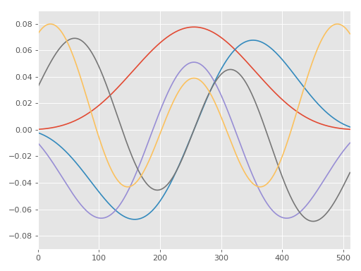

mtspec.dpss¶
- mtspec.multitaper.dpss(npts, fw, number_of_tapers, auto_spline=True, npts_max=None)[source]¶
Calculates DPSS also known as Slepian sequences or Slepian tapers.
Calculation of the DPSS (Discrete Prolate Spheroidal Sequences) and the correspondent eigenvalues. The (1 - eigenvalue) terms are also calculated.
Wraps the dpss() subroutine from the Fortran library.
By default this routine will use spline interpolation if sequences with more than 200.000 samples are requested.
Note
The tapers are the eigenvectors of the tridiagonal matrix sigma(i, j) [see Slepian(1978) eq 14 and 25]. They are also the eigenvectors of the Toeplitz matrix, eq. 18.
Parameters: - npts (int) – The number of points in the series.
- fw (float) – The time-bandwidth product (number of Rayleigh bins).
- number_of_tapers (int) – The desired number of tapers.
- auto_spline (bool) – Whether or not to automatically use spline interpolation for npts > 200000.
- npts_max (None or int) – The number of actual points to calculate the DPSS. If this number is smaller than npts, spline interpolation will be performed, regardless of the value of auto_spline.
Returns: (v, lambda, theta) with v(npts, number_of_tapers) the eigenvectors (tapers), lambda the eigenvalues of the v‘s and theta the 1 - lambda (energy outside the bandwidth) values.
Example
This example demonstrates how to calculate and plot the first five DPSS’.
>>> import matplotlib.pyplot as plt >>> from mtspec import dpss >>> tapers, lamb, theta = dpss(512, 2.5, 5) >>> for i in range(5): ... plt.plot(tapers[:, i])
(Source code, png, hires.png, pdf)


{kind=link}
{kind=link}